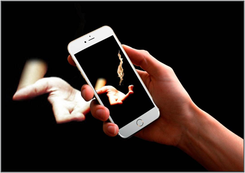
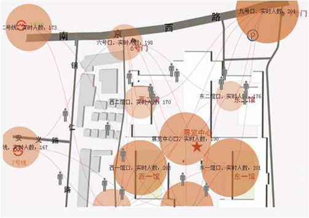
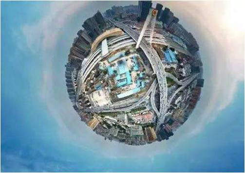
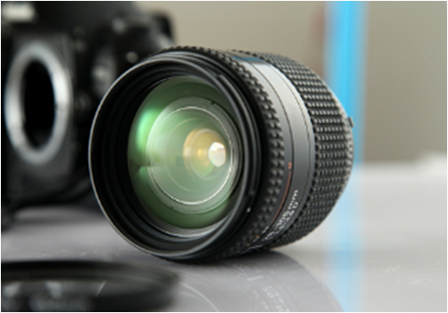
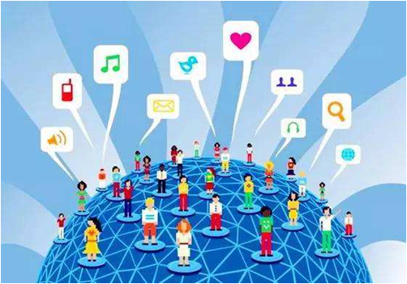
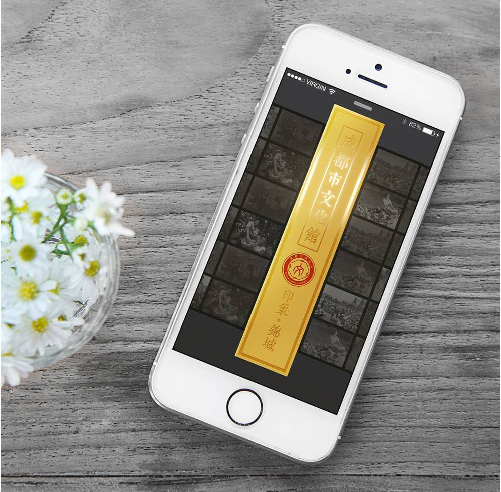
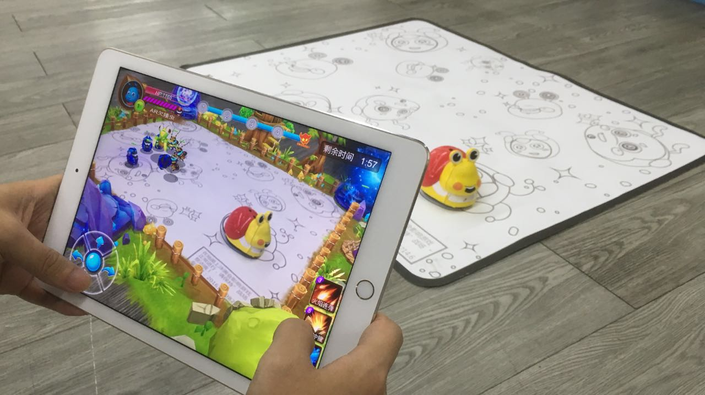

打造文化新阵地
线上展演与运营
线下互动体验空间
虚拟展厅
以实为虚
以实体展厅为基础，实现全景空间与真实环境的映射，让群众在现场体验的过程中通过移动端展示手段更好地读懂文化展品背后的故事。

数据采集
利用WIFI、数据探侦、二维码桥接等技术手段，多渠道采集大数据信息，为决策提供有力支撑。


虚拟漫游
采用计算机视觉技术和计算机图形图像技术，在全景空间中全方位环顾，实现自主漫游，随停随走。
虚拟现实技术
利用VR\AR虚拟现实技术将馆内藏品制成三维立体影像，突破时空局限，实现异地零距离的观赏，减少实物展出，延长文物寿命。
新媒体运营



新媒体运营
新媒体正在逐步取代传统媒体成为使用率最高的媒体形态；
社交媒体与新闻客户端成为日渐重要的咨询通道。
运用新颖的形式拓展覆盖面，借力平台化、精细化运用自媒体、了解公众需求加强公众沟通；

线下互动体验空间

针对文化馆
打造全新的数字文化体验中心.
针对博物馆
对传统博物馆进行技术改造，创新博物馆主体教育活动
针对图书馆
创新阅读与体验空间的结合，以低龄儿童为目标，以国学为载体，让阅读、学习的过程更有趣味，把老祖宗留下来的好东西骄傲的传承下去。